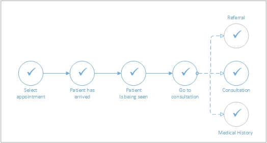
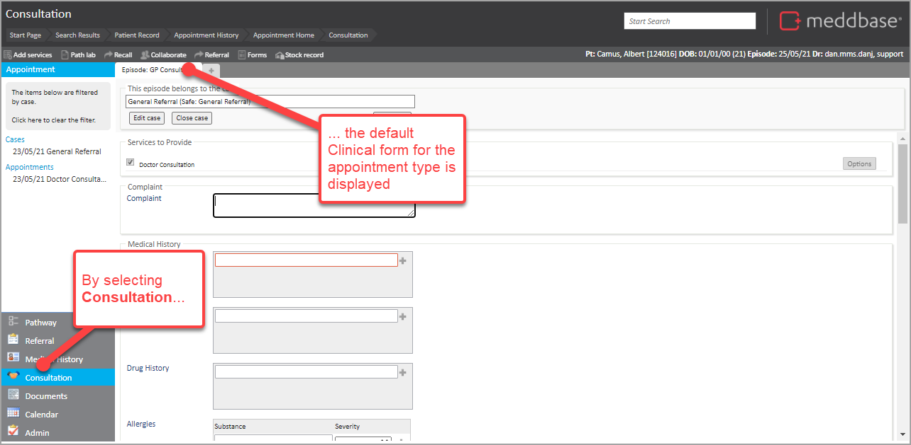
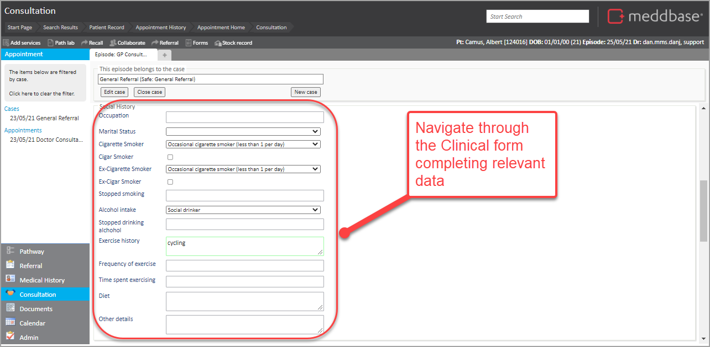
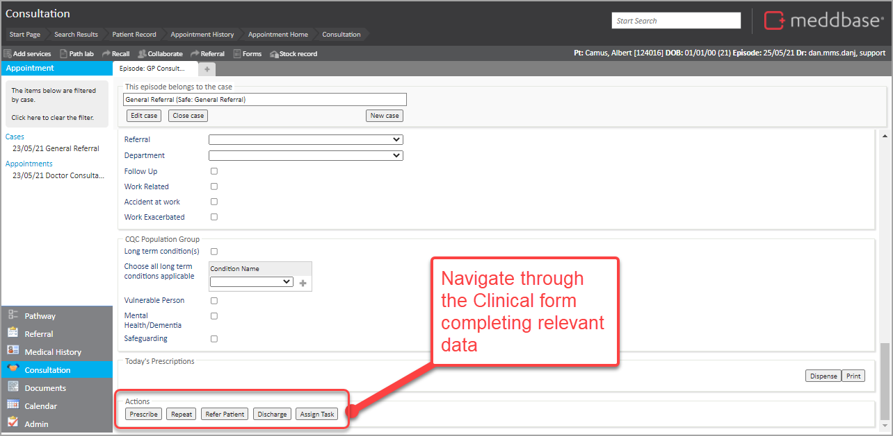
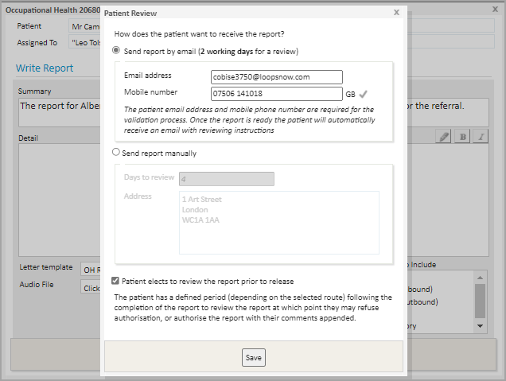

When an appointment has been booked in Meddbase following an OH referral, patient attendance for an appointment triggers a series of steps in Meddbase from patient arrival through to consultation. This enables intuitive and comprehensive management of the process and clinical findings during the patient encounter.
In simple terms, the steps can be summarised in the diagram below.

This article will walk you through the process of conducting the consultation in the Case Management workflow.
Having viewed the Referral and Medical History (as noted in the related Part 1 article), the Medical User can go through a Consultation and complete to Discharge. I.e., writing an Occupational Health Report.
To do this:



In the case of an Occupational Health Appointment, the selection of the Discharge action would trigger the OH Report Writing process and bring up the Patient Review dialogue.

To continue the process, please review Case Management: Report Writing - Occupational Health article.
This is a very simple ‘A to B’ walk-through example. There is a wide range of features and actions available on the Consultation. To explore these, please go to “Case Management: Clinical appointment Part 3 of 3 - Occupational Health"